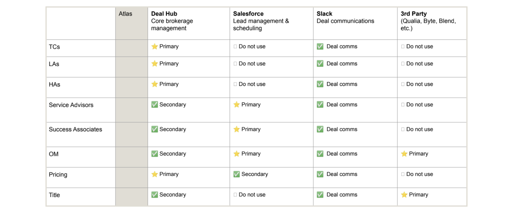

<!DOCTYPE html>
<html lang="en">

<head>
	<title>Emily Porat | Product vision</title>
	<link rel="stylesheet" type="text/css" href="styles/global.css">
	<link rel="stylesheet" type="text/css" href="styles/global-mobile.css">
	<link rel="stylesheet" type="text/css" href="styles/nav.css">
	<link rel="stylesheet" type="text/css" href="styles/projects.css">
	<script src="https://ajax.googleapis.com/ajax/libs/jquery/1.9.1/jquery.min.js"></script>
	<link rel="icon" type="image/x-icon" href="pics/favicon.svg"/>
	<!-- Icons -->
	<script defer src="https://use.fontawesome.com/releases/v5.13.0/js/all.js"></script>
	<script defer src="https://use.fontawesome.com/releases/v5.13.0/js/v4-shims.js"></script>
	<!-- Global site tag (gtag.js) - Google Analytics -->
	<script async src="https://www.googletagmanager.com/gtag/js?id=UA-119412150-1"></script>
	<script>
		window.dataLayer = window.dataLayer || [];
		function gtag(){dataLayer.push(arguments);}
		gtag('js', new Date());

		gtag('config', 'UA-119412150-1');

      // load other reused files
      $(function() {
      	$('#nav').load('https://emilyporat.com/nav.html');
      	$('#footer').load('https://emilyporat.com/footer.html');
      });
  </script>
</head>

</html>
<body class="preload">
	<meta name="viewport" content="width=device-width">
	<div id="nav"></div>
	<div id="arrow-up" onclick="slideUp()"><i class="fa fa-angle-up"></i></div>	

	<div class="full-width" style="background-color: var(--purple);">
		<div class="title-wrapper animate-reveal animate-first">
			<div class="title">
				<div>
					<h4 style="margin-bottom: 10px">Orchard • 2022-23</h4>
					<h1 style="color: black">Product vision</h1>
					<p class="p-XL">Collaborated with product to define a vision and roadmap to integrate our 3 platform tools into one unified product experience.</p>
				</div>
			</div>
		</div> 

		
	</div>


	<div class="panel">
		<div class="body right">
			<div class="context-summary">
				<h2>Project Overview</h2>

				<p class="p-XL">
					Partnered with a PM to define a UX vision + 2023 product roadmap for better integrating Orchard's 3 primary platform products (Salesforce, Atlas, Deal Hub) following the acqusition of a smaller company.
				</p>
				
				<div class="space"></div>

				<div class="context-specifics">

					<div class="context-description">
						<h4>Role</h4>
						<p>Design Lead</p>
					</div> 

					<div class="context-description">
						<h4>Start</h4>
						<p>Nov 2022</p>
					</div> 

					<div class="context-description">
						<h4>End</h4>
						<p>March 2023</p>
					</div> 
				
					<div class="context-description">
						<h4>Team</h4>
						<p>Myself, PM</p>
					</div> 
				</div>

				<div class="space"></div>
				
				<h3>Background</h3>
				<ul>
					<li>Orchard offers streamlined services and tooling for consumers looking to buy and/or sell their home. Orchard has its own Brokerage, Title, and Mortgage sub-companies; each department's teams utilize a different set of platform tools.</li>
					<li>In 2022, Orchard acquired a real estate transaction task-management software company called Preclose, which we rebranded to "Deal Hub" and slowly rolled out to all internal teams.</li>
					<li>Before the acquisition, internal teams relied on Salesforce for tasking, and our in-house software platform, Atlas, for complex workflows.</li>
				</ul>
				
				<div class="space"></div>

				<h3>Problem</h3>
				<p>
					While Deal Hub provided <i>much</i> better flexibility/configurability and tasking functionality for queue-based employees, it created a new issue — major overlap with Atlas and Salesforce data. Users didn't know where to go for what information, or which system to trust. 
				</p>

				<div class="space"></div>

				<h3>Solution</h3>
				<p>
					It was clear we needed to unify the platform tools into one singular experience (or at least what felt like one singular experience).
				</p>

				<div class="space"></div><div class="space"></div>

				<div class="full-width-mid-page">
					<div class="panel dark" style="text-align: center; background-color: var(--white)">
						<h2 style="color: black">Overlap in tools</h2>
						
					</div>
				</div>

				<h2>Process</h2>
				<p>
					<ul>
						<li>Before this initiative kicked off, I led a cross-functional group in defining unique design principles for the platform - these were meant to aid in decision-making and summarize what sets apart Orchard's internal tools.</li>
						<li>My PM partner and I launched a "Listening Tour," conducting 30+ user interviews, covering all platform user groups, so that we had a clear picture of job responsibilities, current tool usage, and primary pain points.</li>
						<li>We synthesized those findings and used our insights to feed into a formal UX vision + product roadmap for 2023.</li>
						<li>We presented our UX vision + roadmap to the entire platform Product-Design-Eng team and high-level leadership to get buy-in.</li>
					</ul>
				</p>

				<div class="space"></div>
				<div class="space"></div>

				<div class="full-width-mid-page">
					<div class="panel dark" style="text-align: center; background-color: white">
						<h3 style="padding-top: 50px; color: black;">Platform Design Principles</h3>
						<div class=p-XL style="padding-top: 10px; color: black; padding-left: 20%; padding-right: 20%; width: 60%">I ran a series of workshops with the goal of defining a set of shared, specific, and opinionated design principles that we will utilize to help guide future design work.</div>
						
					</div>
				</div>


				<h3>Learnings from the Listening Tour</h3>
				<p>
					<ul>
						<li>There aren't clear or distinct enough purposes for each of the 3 primary platform tools (Atlas, Salesforce, and Deal Hub) due to the overlap in functionality + information. This causes confusion and erodes user trust.</li>
						<li>There is no centralized communication platform; each tool has its own built-in comms tools. This makes it harder for teams to communicate effectively and easy for users to miss key information.</li>
						<li>Atlas & Salesforce have proven difficult to maintain - there's a ton of complicated legacy functionality that is no longer relevant.</li>
					</ul>
				</p>

				<div class="space"></div>

				<h3>High-level vision</h3>
				<p>
					I worked with my PM to synthesize + reflect on everything we learned from the listening tour, and we aligned on this high-level vision:
					<ul>
						<li>Deal Hub will replace Atlas from an end-user perspective. Some workflows may continue to <em>technically</em> exist in Atlas, but users will access these workflows via the Deal Hub UI.</li>
						<li>Salesforce will be focused on lead management, scheduling, and load-balancing. Core real estate workflows and data should be deprecated and moved to Deal Hub.</li>
						<li>We will invest in Deal Hub admin & configuration capabalities to enable scale and flexibility as the business grows and changes.</li>
					</ul>
				</p>

				<div class="space"></div>
				<h3>Future tool usage by role:</h3>

			<div class="full-width-mid-page">
				<div class="panel dark" style="text-align: center; background-color: var(--white)">
					
				</div>
			</div>

			<h3>Outcome</h3>
			<p>
				<ul>
					<li>Over the course of 2023, we deprecated irrelevant legacy content and functionality in Atlas and Salesforce and gradually moved it into Deal Hub. We gave most internal roles access to Deal Hub and transitioned them to it as their primary tool.</li>
					<li>In Q3, to address the challenges around communication, we moved to Slack as our primary deal team communication platform and deprecated embedded comms tools in DH, Atlas, and Salesforce. This has led to <em>much</em> more effective cross-team communication.</li>
					<li>In Q4, we overhauled the <a href="booking.html">customer booking workflow,</a> moving booking contract generation out of Atlas and into Deal Hub and moving a large part of our sales team into Deal Hub. This project also established a new pattern for contract generation in general.</li>
					<li>In 2024, we plan to take on a larger IA overhaul project to further centralize Deal Hub as the primary tool + source of truth for all roles.</li>
				</ul>
			</p>

			</div>

		</div>
	</div>

	  	
  	<div id="footer"></div>
  	</meta>
  </body>

  <script src="js/general.js"></script>

</html>